Terms of use
For the StreamerSpace Chrome extension and Streamer Buddy System. Last updated November 8, 2026.
Short version: StreamerSpace is a free hobby project, offered as it is. Be decent to the people you message, follow Twitch's rules, and understand that features can change or stop working at any time.
Who can use it
- You need to be 13 or older, the same as Twitch.
- You need a Twitch account, and you're still bound by Twitch's terms of service and community guidelines while using StreamerSpace.
Not part of Twitch
StreamerSpace and Streamer Buddy System are independent and aren't made, endorsed or supported by Twitch or Amazon. "Twitch" is their trademark.
Using Streamer Buddy System
When you message people through Streamer Buddy System, you're responsible for what you send. Don't use it to:
- harass, threaten or bully anyone, or share hateful content;
- send spam, scams or links meant to trick people;
- share anything illegal, or anything sexual involving minors (this is reported to the authorities);
- pretend to be someone else, or try to get into another person's account;
- overload, attack or interfere with the relay.
Accounts that break these rules can be cut off from Streamer Buddy System, with or without warning. If someone is bothering you, remove them as a connection (that ends all messaging between you) and email the address below.
Features that act on Twitch for you
Some features, such as the account switcher and the auto streak saver, act on twitch.tv in your browser. You choose whether to switch them on, and you're responsible for making sure how you use them fits Twitch's rules.
No warranty
StreamerSpace is provided "as is" and "as available", without warranties of any kind. It may have bugs, lose data, stop working when Twitch changes its site, or be changed or shut down at any time. Keep backups of anything you care about (the Back up button saves a file to your computer).
Limit of liability
To the fullest extent the law allows, the developer isn't liable for any indirect or consequential loss, or for any loss of data, streams, followers, income or Twitch account standing, that comes from using StreamerSpace or Streamer Buddy System. StreamerSpace is free, and your only remedy if you're unhappy with it is to stop using it.
Privacy
What's stored and sent is explained in the privacy policy.
Changes
These terms may be updated. The date at the top shows the latest version, and continuing to use StreamerSpace after a change means you accept it.
Contact
Reports and private requests: streamerspacetom@gmail.com. General questions: open an issue on GitHub (this is public).